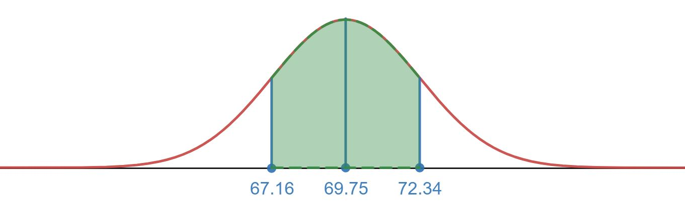
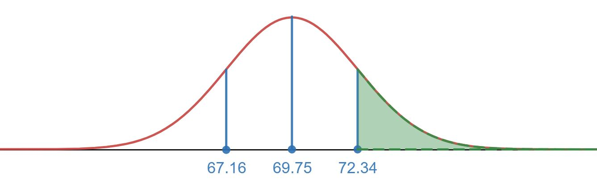

2.5 Normal Distribution
2.5 Normal Distribution
Upon completion of this section, you should be able to
- Describe features of a normal distributions
- Use the Empirical Rule (68-95-99.7 Rule) with applications involving the normal distribution
- Find z-scores for values based on a normal distribution
- Find a percentile for a given z-score using the standard normal table
- Solve applied problems involving normal distributions and the standard normal table
Normal Distribution
One of the things we have looked at in the descriptive statistics sections is a way to describe a particular set of data, whether it be quantitative or categorical (qualitative). A next step we can take is to classify what type of distribution the data may have come from (this allows us to answer very interesting questions about the population). We will focus our time on this concept by looking at a very common distribution named the Normal Distribution. The normal distribution is recognized with its characteristic bell shape, but not all bell shaped distributions must be a normal distribution. The distribution itself only needs the mean and standard deviation to completely describe its shape and properties.
Normal Distribution
The normal distribution is a symmetric distribution in a shape of a bell (sometimes called the bell curve). It is described by the parameters of the mean μ and standard deviation σ. The graph below shows how the bell shape and parameter values identify key portions of the graph on how the bell turn at key points for the shape. The peak of the bell occurs at the mean for the distribution and the graph turns in concavity one standard deviation away from the mean in both directions.
The Normal Distribution plays an important role in many inference procedures in Statistics. We will study some of the properties of the Normal Distribution to give you an idea of what we can say once we are able to identify clearly what the distribution of a variable is from a population. Just keep in mind just because a graph looks bell shape doesn't necessarily mean it will be in general a normal distribution that describes the data.
Strictly speaking, it is not correct to talk about "the normal distribution" since there are many normal distributions. Normal distributions can differ in their means and in their standard deviations. Figure 1 shows three normal distributions. The green (left-most) distribution has a mean of -3 and a standard deviation of 0.5, the distribution in red (the middle distribution) has a mean of 0 and a standard deviation of 1, and the distribution in black (right-most) has a mean of 2 and a standard deviation of 3. These as well as all other normal distributions are symmetric with relatively more values at the center of the distribution and relatively few in the tails.

Some features of normal distributions are listed below.
- Normal distributions are symmetric around their mean.
- The mean, median, and mode of a normal distribution are equal.
- Normal distributions are denser in the center and less dense in the tails.
- Normal distributions are defined by two parameters, the mean (μ) and the standard deviation (σ).
- 68% of the area of a normal distribution is within one standard deviation of the mean.
- Approximately 95% of the area of a normal distribution is within two standard deviations of the mean.
- Approximately 99.7% of the area of a normal distribution is within three standard deviations of the mean.
Each different choice of specific numerical values for the pair μ and σ gives a different bell shaped curve. The value of μ determines the location of the center for the curve, as shown in Figure 2 "Bell Curves with different values of μ". In each case the curve is symmetric about µ.

In figure 2 the standard deviation was the same for each normal distribution, but only the mean was changed. What we see is that the mean determines where the center of the distribution is, but doesn't change with width or spread of the distribution. Visually it appears the distribution is just a copy of each other shifted left or right depending on the value of the mean.
The value of σ determines whether the bell curve is tall and thin or short and squat, subject always to the condition that the total area under the curve be equal to 1. This is shown in Figure 3 "Bell Curves with different values of σ", where we have arbitrarily chosen to center the curves at μ = 6.
We just spent some time going over the shape of a normal distribution. Let's put some of these ideas together with an example of a population that has a normal distribution to see what we can say about the population just by knowing it is normal with a given mean. In the next topic for this page we will explore further how we can answer questions about the population by knowing it follows a normal distribution.
Example 1
Heights of 25-year-old men in a certain region have mean 69.75 inches and standard deviation 2.59 inches. These heights are approximately normally distributed.
-
Construct a rough sketch of the normal distribution labeling the mean and one standard deviation from the mean on the horizontal axis.
-
What percent of men have a height above 69.75 inches?
Solution
-
The graph of the normal distribution is displayed below.

-
The normal distribution is symmetric about the mean. This means 50% of the population would be above the mean and 50% of the population would be below the mean. We can conclude 50% of men have a height above 69.75 inches.
Empirical Rule (68 - 95 - 99.7 Rule)
Below is a rough sketch of a Normal Distribution along with what we know about the amount of data within 1, 2, or 3 standard deviations about the mean. On the graph the peak is where the mean is (which would also be the median and mode value for the data set). These Rules apply to most Bell Shaped curves (there are some exceptions, but for the ones you will see in this course you may assume the rule applies).
Empirical Rule (68 - 95 - 99.7 Rule)
The empirical rule or the 68 - 95 - 99.7 Rule states that for a normal distribution we are able to determine the area under the curve in regions one, two, or three standard deviations from the mean.
- About 68% of all values fall within 1 standard deviation of the mean.
- About 95% of all values fall within 2 standard deviations of the mean.
- About 99.7% of all values fall within 3 standard deviations of the mean.
It is helpful for any problem you work on to start with a general visual for the normal distribution and then label the values of the mean and standard deviation values to help answer questions in the application. The image below is the baseline for drawing that normal distribution as it includes 1, 2, and 3 standard deviation values below and above the mean. The areas then for each region can be taken from the image above.
Example 2
Suppose we have a normal distribution with a mean of 10 and standard deviation of 2.
-
What is the percentage of the population that has a value between 8 and 12?
-
What is the percentage of the population that has a value below 12?
-
What is the percentage of the population with values between 6 and 12?
Solution
-
To use the empircal rule it is best to visualize the distribution along with the region we are looking for.

Since 8 is 10-2 and 12 is 10+2 we can see that we are one standard deviation below the mean and one standard deviation above the mean. This means using the empirical Rule that we have 68% of the population.
-
Visualize the region of interest before jumping into the empirical rule.

We will have to use the fact that the normal distribution is symmetric about the mean and the empirical rule. 12 is a score that is one standard deviation above the mean. We know two things:
- 50% of the population is below the mean (normal distribution is symmetric about the mean).
- 68% of the population is between 1 standard deviation above and below the mean (empirical Rule)
Since 68% is the percentage between 1 standard deviation above and below the mean we can say that is the percentage above the mean to 1 standard deviation away (this would be the interval from 10 to 12). Add to that the 50% below the mean (this would be the interval for everything below 10) we have that 84% of the values are below 1 standard deviation above the mean (or in context below a value of 12).
-
The visual for the interval from 6 to 12 is shown below.

Using the information from b. we know that from 10 to 12 (the mean to one standard deviation above the mean) we have 34% of the values. The empirical Rule and symmetry argument like in b. will help us figure out what percentage goes from 6 to 10.
We can see 6 is 2 standard deviations below the mean (6=10-2*2). The empirical Rule tells us that about 95% of the values are between two standard deviations above and below the mean, so this means 95% of the observations are between the values 6 and 14. We can use the symmetry of the normal distribution to say that must mean only of the values occur between 6 and 10 (between the mean and two standard deviations below the mean). Putting this together we see that there is a total of 34%+47.5%=81.5% of the values between 6 and 12.
Example 3
Heights of 25-year-old men in a certain region have mean 69.75 inches and standard deviation 2.59 inches. These heights are approximately normally distributed. Answer the following questions using the Empirical Rule. If the rule does not apply state why.
-
What percent of men have a height between 67.16 and 72.34 inches?
-
What percent of men have a height above 72.34 inches?
-
What percent of men have a height below 64.57 inches?
-
What percent of men have a height below 66.0 inches?
Solutions
As you go about answering these draw a shaded in diagram of a normal distribution to represent the area of interest to help guide you in your work.
-
The region shown below illustrates the shaded in region for one standard deviation above and below the mean. From the empirical rule we know this region represents 68% of the population.
 -
The region shown below that is shaded in shows we are looking at everything one standard deviation above the mean. The empirical rule can help us find this area along with knowing 50% of the population would be above the mean. From the empirical rule we know the region from 69.75 to 72.34 would have 34% percent of the population (this is half of the 68% from one standard deviation above and below the mean). Since 50% is above the mean we can subtract the 34% away to find the remaining upper tail shaded in below:
 -
The region shown below that is shaded in shows we are looking at everything two standard deviations and below the mean. We can use a similar strategy as part b above. We know 50% of the population would be below the mean and the empirical rule tells us that would be two standard deviations below the mean. This means the percent below 64.57 would be

-
The shaded in region below 66 is shown below. The empirical rule only gives us tools to find the percentage of a population that falls at 1, 2, or 3 standard deviations away from the mean. The value 66 appears to fall between 1 and 2 standard deviation below the mean, so we cannot use the empirical rule to find this percent of the population.

The video below is from Sal at KhanAcademy. Please remember to pause the video and attempt the problem on your own (you may need to listen to the details as the text is hard to read).
(cc)
Now it is your turn to practice with the Empirical Rule.
Try it Now 1
It is known that the head circumference among soldiers has a mean of 22.8 inches and a standard deviation of 1.1 inches. It is also known that the distribution has a bell shaped curve to it (i.e. a Normal Distribution).
-
What % of soldiers heads have a circumference larger than 22.8?
-
Larger than 23.9?
Hint 1
The graph of the normal distribution shows us half of the region is above the mean and the other half is below. This should make answering the first part a bit easier. For the second part you may want to draw the normal distribution and see if there is a way to use the empirical rule to find the percentage above 23.9
Below is the graph of the normal distribution to help you shade in the region of interest for each part.

Answer
-
50%, since a normal distribution is symmetric about the mean.

-
16%, We know by the empirical Rule and symmetry that 34% of the head circumferences fall between 22.8 and 23.9 inches (68% of the empirical Rule and Symmetry). By symmetry we also know that 50% are smaller than 22.8 inches. This gives us a total of 84% of head circumferences that are smaller than 23.9 inches. The remaining 16% must then be larger than 23.9 inches.

Z-Scores
Can we still determine percentages of observations for a normal distribution if we are not 1, 2, or 3 standard deviations away from a mean (i.e. can we find the area under a normal distribution where the starting or ending points are not 1, 2, or 3 standard deviations away from the mean)? The answer is yes, but the methods for doing so will vary depending on what tools you have available to you. The method we will use below uses the idea of still measuring how many standard deviations away from the mean an observed data value is. That signed distance is what we will call a z-score.
Z-score
The number of standard deviations that a given value is above or below the mean from a normal distribution. We calculate a z-score by using the following formula:
The z-score tells you how many standard deviations the value x is above (to the right of) or below (to the left of) the mean, μ. Values of x that are larger than the mean have positive z-scores, and values of x that are smaller than the mean have negative z-scores. If x equals the mean, then x has a z-score of zero.
Example 4
Heights of 25-year-old men in a certain region have mean 69.75 inches and standard deviation 2.59 inches. These heights are approximately normally distributed. Find the z-score for a height of 66.0 inches. Round to the nearest hundredth.
Solution
Based on our work from Example 2 we saw that 66.0 was below the mean, so we expect to have a z-score that is negative:
The z-score is approximately -1.45.
One of the things we can use z-scores for is to compare two data points from different normal distributions. What the z-score tells us is how far away the data point is from the mean of the population it is from. The further away the more extreme that data value is.
Example 5
Brand A tire has a mean life of 45,000 miles and a standard deviation of 4,500 miles. Brand B has a mean life of 38,000 miles and a standard deviation of 2080 miles. Suppose somebody with a Brand A tire lasts 48,000 miles while someone with Brand B tire lasts 40,000 miles. Which driver got a better deal from their tire?
Solution
We do notice that they both had better mileage than the mean (Brand A was 3,000 miles above the mean and Brand B was 2,000 miles above the mean). Brand A had more mileage above the mean, but does it mean it was better relative to the tires in its own population? The answer to this would depend on how far from the mean it was in a relative distance to the population's measure of spread (the standard deviation). The z-score will tell us that distance from the mean in terms of the standard deviation - we can use this to compare to the Brand B tire.
The Brand B tire was further from the mean based upon the calculated z-score (remember this calculation includes the relative size of the dispersion of the population). The person with the Brand B tire received better performance out of all Brand B tires in the population than the Brand A owner did in the Brand A population. The Brand B driver got a better deal in terms of performance of the tire in the population of Brand B tires as fewer Brand B tires would have lasted longer when compared to the Brand A tire.
Try it Now 2
At a particular school there was concern about grade inflation. One solution presented was to issue standardized grades in addition to the regular course grade for students' records. For each class a student received a score (from 0 to 4) and the class mean and standard deviation of scores were recorded.
For a given student Camila the scores for four classes were recorded. If we were to judge by standardized grades which class did Camila do best in? Which course did she do the worst?
| Camila's Score | Mean for Class | Standard Deviation for Class | |
|---|---|---|---|
| WRT 101 | 3.55 | 3.15 | .30 |
| MAT 142 | 3.60 | 3.05 | .45 |
| BIO 201IN | 3.40 | 2.95 | .50 |
| PSY101 | 3.55 | 3.65 | .15 |
Hint 1
Answer
Z-Score Percentiles
The idea of using a z-score was sort of introduced to solve problems relating to percentages of a normal distribution through the use of the empirical Rule (think about it - we were looking at being 1, 2, 3 for the value of a z-score in those problems). What do we do if the regions of interest on that normal distribution are not exactly 0, 1, 2 or 3 standard deviations away? We can't use our empirical rule to solve that problem and will have to rely on another method. One way to approach these types of problems is to relate the region of interest to an equivalent region of interest on the standard normal distribution. We can do this by converting key values to a z-score.
How does converting a value to a z-score help us?
If the data values come from a normal distribution, then these z-scores will also be a normal distribution, but this normal distribution is guaranteed to have a mean, μ, of 0 and a standard deviation, σ, of 1. We call this the Standard Normal Distribution.
Standard Normal Distribution
A standard normal distribution is a normal distribution with mean μ = 0 and standard deviation σ = 1. It will always be denoted by the letter Z.
The way to calculate the percentage below a given z-score can be found by using a table of values from a standard normal distribution (depending on where the table comes from there are different ways to read these - we will use the table provided in the link for our calculations). Print out the pdf version for your own reference as you go through these problems.
We use the table by breaking up the z-score into two parts and finding a corresponding row and column that represents that number. To break up the z-score we rewrite the number to the tenth place and then keep track of the hundredth digit. For instance z = 1.61 is broken into z = 1.6 and 0.01. On the table we go down until we see 1.6 in the first column. Next we go to the right to match the column with .01. The value at the intersection of row 1.6 and column 0.01 is then recorded, so in this case 0.9463.

The value 0.9463 is the percentile for z = 1.61. That percentile represents the percentage of the population that had a z-score below your given value. For instance z = 1.61 tells us that 94.63% of the population has a z-score lower than 1.61. Remember the z-score is interpreted as how many standard deviation for the mean the data point was, so z = 1.61 says that the data value is 1.61 standard deviations above the mean. The graph below gives a visual of the z-score value z = 1.61 and the percentile region as shaded in for a standard normal distribution.

Percentile
Given an observed value x in a data set, x is the Pth percentile of the data if the percentage of the data that are less than or equal to x is P.
This percentile value will also be referred to as the area under the curve to the left of the given z-score.
Example 6
Find the percentiles for the indicated z-score.
-
z = -1.29
-
z = 0
-
z = 0.99
Solution
-
Using the z-score table we find the percentile for z = -1.29 as 0.0985 or 9.85%

-
Using the z-score table we find the percentile for z = 0 as 0.5000 or 50.00%

-
Using the z-score table we find the percentile for z = 0.99 as .8389 or 83.89%

In the next example we will find the percentage of values for various regions on the standard normal distribution.
Example 7
Find the percentage of values for each interval given below:
-
-
-
0.5 < z < 1.57
-
-2.55 < z < 0.09
Solutions
-
The z-score table already gives the percentage of values below a given z-score (also known as the area under the curve up to a given z-score). From the table for we read that the percentage (or area) is .9306 for .
Shaded in region under Standard Normal Distribution that represents the percentage of value for z < 1.48. 
-
To find the percentage above 1.60 we are going to run into a problem by just trying to pull the value off directly on the table. The table only gives area to the left, so visually we are not getting the correct value directly. Since the total area under the curve is equal to 1 if we have the area to the left we can subtract that from 1 to find the area to the right for .
The table gives a value for as 0.9542, so the percentage above will be .
Shaded in region under Standard Normal Distribution that represents the percentage of value for . 
-
To find the percentage of values between first look up the areas in the table that correspond to the numbers 0.5 (which we think of as 0.50 to use the table) and 1.57. We obtain 0.6915 and 0.9418, respectively. The value 0.9418 represents the percentage shaded in below , but we do not want all of that area. Take away from 0.9418 what we don't want, which is the shaded in area below . The table gave us the value 0.6915 for that area. The difference of these two numbers give the percentage desired: .
Shaded in region under Standard Normal Distribution that represents the percentage of value for z between 0.5 and 1.57 
-
Using a similar strategy as c and subtract the percentiles found from the table from both z-scores. The percentage between -2.55 and 0.09 is: .
Shaded in region under Standard Normal Distribution that represents the percentage of value for z between 0.09 and -2.55 
Normal Distribution Applications
Now we are ready to tackle problems related to a normal distribution. We will be looking at how to find the percentage of values that will fall within certain regions of a normal distribution. The way we can answer the questions is to identify the region of interest on a normal distribution curve. Identify any key points (start and end points for the intervals of interest). Convert those key points to z-scores and use the standard normal table to find the percentiles. From there we construct an equation (if needed) to find the percentage related to our interval of interest.
In the examples that follow it is helpful to always draw the normal distribution and shade in the region of interest. This will help decide what to do with values from the standard normal table. Try not to skip the step of drawing the normal distribution as work on the additional exercises below the examples.
Example 8
A normal distribution has a mean of 10 and a standard deviation of 2.5. Find the percentage of values below 14.
Solution
Start with identifying the region of interest on the normal distribution. We want to find the percentage of values that fall below the value of 14. Draw the normal distribution and label the mean. Label 14 (the key point here as we want the percentage below 14).
Find the z-score:
The percentile that corresponds to a z-score of 1.60 on the table is 0.9452, so this means 94.52% of the values on this normal distribution are below a value of 14.
Shaded in region under Normal Distribution that represents the percentage of values below 14 on a normal distribution with a mean of 10 and standard deviation of 2.5.

Let us revisit the example of male heights and use the standard normal table to help us solve the question from example 2.
Example 9
Heights of 25-year-old men in a certain region have mean 69.75 inches and standard deviation 2.59 inches. These heights are approximately normally distributed. Find the percentage of men whose heights are below 66.0 inches.
Solution
Start with drawing the normal distribution as we did earlier in example 2 and show the shaded region we are interested in.
To find this percentage we will convert the 66.0 to a z-score. Next we will go to the standard normal table and pull out the percentage of the population that fall below the z-score. That value will give us the percent we are interested in since it corresponds to the area to the left under the normal curve. If you were looking for the percentage above we would need to take one additional step of subtracting the value from 100%.
With a z-score of -1.45 we go to the standard normal table and see the corresponding value is .0735 which means 7.35% of the population is below that given z-score of -1.45. We can conclude then that 7.35% of men (from the given region) have a height below 66.0 inches.

Example 10
The lifetimes of the tread of a certain automobile tire are normally distributed with mean 37,500 miles and standard deviation 4,500 miles. What percentage of tread lives will be between 30,000 and 40,000 miles?
Solution
We are looking for the percentage between two values under the number distribution. Convert each endpoint to a z-score and use the standard normal table to find the percentage of values below that given z-score. The difference between those two percentiles will be the percentage of values between them.
Find the z-score for 30,000:
Find the z-score for 40,000:
The standard normal table reads 4.75% of all values fall below the z-score of -1.67. For z-score of 0.56 we have 71.23% of all values falling below it. As illustrated below the area between them is going to be the difference of these two values: .
Shaded in region under Normal Distribution that represents the tread life values between 30,000 and 40,000 on a normal distribution with a mean of 37,500 and standard deviation of 4,500.

Try it Now 4
It is known that the head circumference among soldiers has a mean of 22.8 inches and a standard deviation of 1.1 inches. It is also known that the distribution has a bell shaped curve to it (i.e. a Normal Distribution).
-
What % of soldier heads have a circumference larger than 23 inches?
-
Between 20 inches and 23 inches?
Hint 1
Hint 2
-
Shaded in area for the interval above 23 inches on the normal distribution.

-
Shaded in area for the interval between 20 and 23 inches on the normal distribution.

Answer
Exercises:
-
The normal distribution is defined by two parameters. What are they?
Answer
-
True/false: For any normal distribution, the mean, median, and mode will have the same value.
Answer
-
True/false: The proportion of values above the mean is 50%.
Answer
-
True/false: A normal distribution has a mean of 60 and a standard deviation of 10. 65% of the values fall within 60 to 70.
Answer
-
True/false: A normal distribution has a mean of 60 and a standard deviation of 10. You can use the empirical rule to find the percent of values between 55 and 65.
Answer
-
A normal distribution has a mean of 80 and a standard deviation of 12. What values are within one standard deviation of the mean?
Answer
-
(a) What proportion of a normal distribution is within one standard deviation of the mean? (b) What proportion is more than 2.0 standard deviations from the mean?
Answer
-
What proportion of a normal distribution is above one standard deviation from the mean?
Answer
-
A company that makes frozen pizzas knows that the pizza that are made have a diameter with a mean of 9.2 inches with a standard deviation of .1 inch. They advertise the pizzas as 9 inch pizzas. Use the empirical Rule to determine what percentage of pizzas made are actually smaller than 9 inches.
Answer
-
The exam scores for a large class is approximated by a normal distribution with a mean of 72 and standard deviation of 8. Answer the following questions using the empirical Rule, if it is not possible to use the empirical Rule state why.
-
What percentage of students scored below 80%?
-
What percentage of students had a score between 56% and 88%?
-
What range of scores had the middle 99.7% of students results?
-
What percentage of students had a score greater than 90 on the exam?
-
What score has the top 5% of the students exam results.
Answer
-
-
A normal distribution has a mean of 20 and a standard deviation of 4. Find the percentage of values that fall below 12.
Answer
-
If scores are normally distributed with a mean of 35 and a standard deviation of 10, what percent of the scores is: (a) greater than 45? (b) smaller than 25? (c) Why are the values in (a) and (b) equal?
Answer
-
The lifetimes of the tread of a certain automobile tire are normally distributed with mean 37,500 miles and standard deviation 4,500 miles. Find the probability that the tread life of a randomly selected tire will be between 33,000 and 42,000 miles.
Answer
-
The amount X of beverage in a can labeled 12 ounces is normally distributed with mean 12.1 ounces and standard deviation 0.05 ounce. What percent of 12 ounce cans are under filled (cans that have less than 12 ounces).
Answer
-
An automobile manufacturer introduces a new model that averages 27 miles per gallon in the city. A person who plans to purchase one of these new cars wrote the manufacturer for the details of the tests, and found out that the standard deviation is 3 miles per gallon. Assume that in-city mileage is approximately normally distributed.
-
What percentage of the time is the car averaging less than 21 miles per gallon for in-city driving?
-
What percentage of the time is the car averaging above 30 miles per gallon for in-city driving?
Answer
-
-
A normal distribution has a mean of 20 and a standard deviation of 4. Find the z scores for the following numbers: (a) 28 (b) 18 (c) 10 (d) 23.
Answer
-
A normal distribution has a mean of -5 and a standard deviation of 12. Find the z scores for the following numbers (round to two places): (a) -5 (b) -10 (c) 7 (d) 12.
Answer
-
A normal distribution has a mean of 1200 and a standard deviation of 100. Find the z scores for the following numbers: (a) 1050 (b) 1200 (c) 1500 (d) 1475.
Answer
-
Find the percentile for the indicated z-score.
-
z = -2.0
-
z = 2.0
-
z = -1.12
-
z = 1.12
Answer
-
-
Find the percentile for the indicated z-score.
-
z = 0.65
-
z = 0
-
z = -1.5
-
z = 1.09
Answer
-
-
Find the percentage of values on the standard normal distribution in the given intervals.
Answer
-
-
Find the percentage of values on the standard normal distribution in the given intervals.
Answer
-
-
Find the percentage of values on the standard normal distribution in the given intervals.
Answer
-
-
A student received a standardized (z) score on a test that was -0.57. What does this score tell about how this student scored in relation to the rest of the class?
Answer
-
A student received a standardized (z) score on a test that was 2.0. What does this score tell about how this student scored in relation to the rest of the class?
Answer
-
What z-score corresponds to the 90th percentile?
Answer
-
What z-score corresponds to the 75 th percentile?
Answer
-
What z-score corresponds to the 50 th percentile?
Answer
-
What z-score corresponds to the 25 th percentile?
Answer
-
If scores are normally distributed with a mean of 35 and a standard deviation of 10, what percent of the scores is: (a) greater than 34? (b) smaller than 42? (c) between 28 and 34?
Answer
-
If scores are normally distributed with a mean of -12 and a standard deviation of 3.5, what percent of the scores is: (a) greater than -8? (b) smaller than -14? (c) between -10 and -13?
Answer
-
An automobile manufacturer introduces a new model that averages 27 miles per gallon in the city. A person who plans to purchase one of these new cars wrote the manufacturer for the details of the tests, and found out that the standard deviation is 3 miles per gallon. Assume that in-city mileage is approximately normally distributed.
-
What percentage of the time is the car averaging less than 20 miles per gallon for in-city driving?
-
What percentage of the time is the car averaging between 25 and 29 miles per gallon for in-city driving?
Answer
-
-
Assume the speed of vehicles along a stretch of I-10 has an approximately normal distribution with a mean of 68 mph and a standard deviation of 6 mph.
-
The current speed limit is 65 mph. What is the proportion of vehicles less than or equal to the speed limit?
-
What proportion of the vehicles would be going less than 55 mph?
-
In what way do you think the actual distribution of speeds differs from a normal distribution?
Answer
-
-
A test is normally distributed with a mean of 70 and a standard deviation of 8. What score is needed to be in the top 15% of all scores?
Answer
-
A group of students at a school takes a history test. The distribution is normal with a mean of 25, and a standard deviation of 4.
-
Everyone who scores in the top 30% of the distribution gets a certificate. What is the lowest score someone can get and still earn a certificate?
-
The top 5% of the scores get to compete in a statewide history contest. What is the lowest score someone can get and still go onto compete with the rest of the state?
Answer
-
-
Suppose that weights of bags of potato chips coming from a factory follow a normal distribution with mean 12.8 ounces and standard deviation .6 ounces. If the manufacturer wants to keep the mean at 12.8 ounces but adjust the standard deviation so that only 1% of the bags weigh less than 12 ounces, how small does he/she need to make that standard deviation? Round your answer to two decimal places.
Answer
-
The patient recovery time from a particular surgical procedure is normally distributed with a mean of 5.3 days and a standard deviation of 2.1 days. What percent of patients spend two or more days in recovery?
Answer